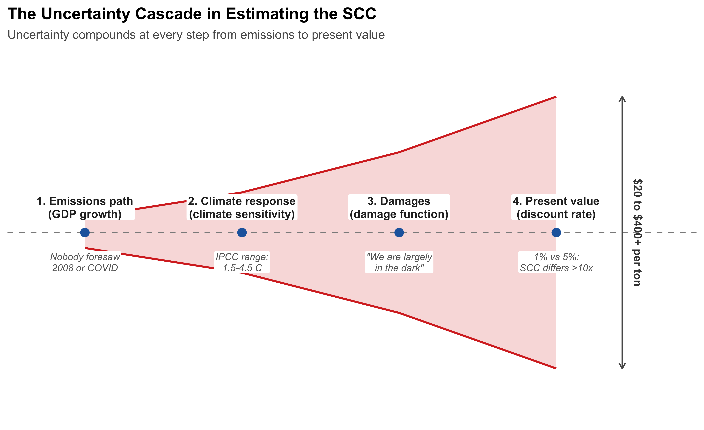
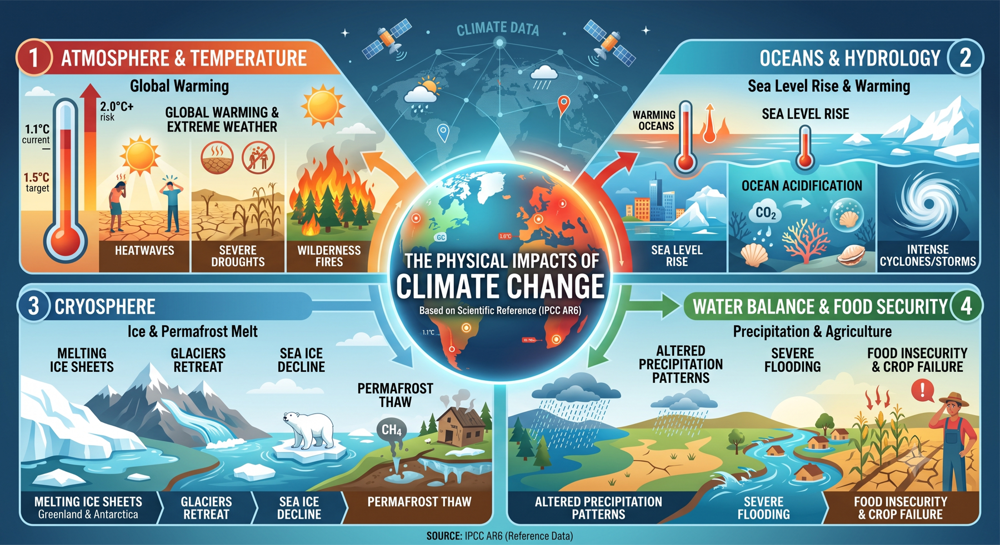
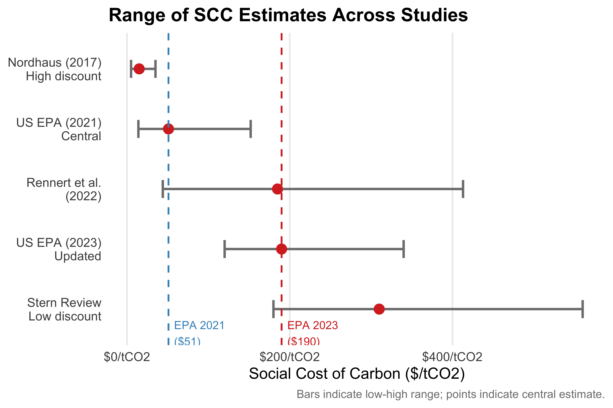

기후 피해의 측정과 가치평가
기후변화의 물리적 영향
경제적 피해를 따지기 전에, 기후변화가 물리적으로 무엇을 바꾸는지부터 정리할 필요가 있다. 화폐로 환산할 대상이 무엇인지 알아야 가치평가를 시작할 수 있기 때문이다. Figure 6.1 는 IPCC 제6차 평가보고서가 종합한 관측·전망 결과를 네 영역으로 나누어 보여준다 (O’Neill et al. 2022).
① 대기와 기온에서는 지구 평균기온 상승과 함께 폭염·가뭄·산불이 잦아진다. ② 해양과 수문에서는 해수면 상승, 해양 온난화와 산성화, 열대저기압의 강화가 나타난다. ③ 빙권에서는 그린란드·남극 빙상의 융해, 빙하 후퇴, 해빙 감소, 그리고 메탄(\(\text{CH}_4\))을 방출하는 영구동토층 해빙이 진행된다. ④ 물 균형과 식량 안보에서는 강수 패턴의 변화가 홍수와 작물 실패로 이어진다.

주목할 점은 이 영향들이 서로 독립적이지 않다는 것이다. 기온 상승이 빙상을 녹여 해수면을 밀어 올리고, 따뜻해진 바다가 열대저기압에 에너지를 공급하며, 영구동토층에서 풀려난 메탄이 다시 온난화를 가속한다. 1장에서 익힌 결합 분포의 언어로 말하면, 이 변수들은 공분산 구조로 얽혀 함께 움직인다. 경제적 피해를 추정할 때 각 부문의 피해를 따로 계산해 단순 합산하는 방식(뒤에서 볼 열거법)이 한계를 갖는 이유가 여기에 있다.
아래에서는 이 물리적 변화가 경제와 만나는 지점을 부문별로 살펴본다.
생태계 및 생물 다양성
기후변화는 관리·비관리 생태계 모두에 영향을 미친다. 온도 상승, 강수 패턴 변화, 해양 산성화, 극단적 기상 현상의 빈도 증가가 동식물의 서식지를 변화시키고 생물 다양성을 위협한다.
가장 명확한 현상 중 하나는 종 분포의 이동이다. 기온 상승에 따라 생물군계(biome)의 경계가 극지방과 고지대로 이동하며, 많은 종들이 적합한 서식지를 따라 이주한다. 이 과정에서 이주 능력이 부족한 종들은 국지적 멸종 위기에 처한다.
농업과 식량 안보
기후변화가 농업에 미치는 영향은 복잡하다.
긍정적 측면도 있다. 대기 중 \(\text{CO}_2\) 농도 증가는 광합성을 촉진하는 \(\text{CO}_2\) 시비 효과(CO₂ fertilization effect)로 작물 생산성을 단기적으로 높일 수 있다. 또한 한랭 지역에서는 성장 기간이 늘어나기도 한다.
그러나 장기적으로는 부정적 영향이 지배적이다. 고온 스트레스, 가뭄, 극단적 강수 이벤트 증가, 병해충 확산이 작물 수확량을 감소시킨다. IPCC에 따르면 전 지구 식량 생산은 세기 중반 이후 전반적으로 감소하며, 열대·아열대 지역 개발도상국에서 타격이 특히 크다.
| 온도 상승 | 주요 작물 수확량 변화(전 지구 평균) |
|---|---|
| +1°C | 소폭 증가 (CO₂ 시비 효과 우세) |
| +2°C | 밀·옥수수 등 일부 감소 시작 |
| +3°C 이상 | 대부분 작물 10~25% 이상 감소 |
해수면 상승과 해안 지역
해양의 열팽창과 그린란드·남극 빙상의 융해로 해수면이 지속 상승 중이다. 저지대 해안 도시, 소도서 국가, 삼각주 지역이 침수·침식·염수 침입 위협에 노출된다. 해안 보호 기반시설 투자 비용도 급증한다.
인간 건강
기후변화는 다양한 경로로 인간 건강에 영향을 미친다.
한파 사망은 줄지만 폭염 사망이 늘어나며, 순 효과는 지역과 시나리오에 따라 다르다. 말라리아, 뎅기열 등 열대성 감염병의 분포 지역이 확대된다. 대기 오염과 알레르기 악화도 기후변화와 연관된다.
노동 생산성과 에너지 수요
고온은 옥외 노동 생산성을 직접 저하시킨다. 특히 건설, 농업 등 열에 민감한 부문과 열대·아열대 지역에서 영향이 크다. 에너지 수요는 냉방 수요 증가로 여름에 늘고, 난방 수요 감소로 겨울에 줄어—순 효과는 지역 기후에 따라 다르다.
적응과 완화
두 전략의 경제학
기후변화에 대응하는 경제적 수단은 크게 완화(mitigation)와 적응(adaptation) 두 가지로 나뉜다.
Note완화(Mitigation)와 적응(Adaptation)
완화(Mitigation): 온실가스 배출을 줄이거나 흡수원을 늘려 기후변화 자체를 억제하는 행동. 태양광·풍력 투자, 에너지 효율 개선, 산림 보전 등이 해당한다.
적응(Adaptation): 기후변화의 영향을 수용하고 그 피해를 줄이는 행동. 해안 방벽 건설, 내열성 작물 개발, 폭염 대응 의료 인프라 구축 등이 해당한다.
경제학적으로 두 전략은 정책 대체재(policy substitutes)다. 적응을 많이 할수록 완화의 필요성이 줄고, 완화를 많이 할수록 적응 비용이 줄어든다. 최적 대응은 두 전략의 한계비용이 일치하는 수준에서 결정된다.
\[\text{MC}_{\text{완화}} = \text{MC}_{\text{적응}}\]
그러나 두 전략은 중요한 차이점이 있다. 완화는 전 지구적 공공재 문제—한 나라의 감축이 모든 나라에게 편익을 준다—이므로 국제 협력이 필수적이다. 반면 적응은 대부분 국지적·사적(local and private)이다. 농부가 내열성 작물 품종으로 바꾸는 것은 국제 협약 없이 개인이 결정한다.
기후변화 피해의 화폐적 가치 평가
비시장 가치 평가의 필요성
기후변화의 많은 피해—생태계 손실, 건강 영향, 문화유산 훼손—는 시장에서 직접 거래되지 않는다. 이를 감축비용과 비교하여 비용-편익 분석을 수행하려면 모든 영향을 공통 단위(화폐)로 표현해야 한다. 이것이 비시장 가치 평가(non-market valuation)다.
Note주요 비시장 가치 평가 방법
현시선호법(Revealed Preference Methods): 시장에서의 실제 행동으로부터 환경재의 가치를 추론한다.
- 헤도닉 가격법(Hedonic Pricing): 주택 가격이나 임금에 반영된 환경 특성의 가치를 추정한다. 예: 소음·대기오염이 심한 지역의 주택이 얼마나 낮은 가격에 거래되는가?
- 여행비용법(Travel Cost Method): 사람들이 자연 명소를 방문하기 위해 지출하는 비용에서 그 자원의 가치를 추정한다.
진술선호법(Stated Preference Methods): 가상 시나리오에 대한 설문 응답으로 가치를 직접 측정한다.
- 조건부 가치측정법(Contingent Valuation Method, CVM): “이 환경 개선을 위해 얼마를 지불하겠습니까?”
- 선택실험법(Choice Experiment): 여러 속성을 가진 대안 중 선택하게 하여 각 속성의 가치를 추정한다.
총 경제적 피해 추정
연구자들은 다양한 방법으로 기후변화의 총 경제적 피해를 화폐 단위로 추정해왔다.
열거법(Enumerative Method): 개별 분야(농업, 해안, 건강 등)의 물리적 피해를 추정하고, 각각에 시장·비시장 가격을 곱해 합산한다. 분야 간 상호작용을 포착하지 못한다는 한계가 있다.
연산 가능 일반균형 모형(CGE Model): 개별 충격이 시장 가격과 국가 간 교역에 미치는 파급 효과를 포착한다.
통계 모형: 기상 데이터와 경제 성과 지표의 패널 데이터를 활용해 기후-경제 관계를 통계적으로 추정한다. 최근 활발히 발전하고 있는 방법이다.
일반적인 발견은 다음과 같다. 기후변화의 총 경제적 피해는 기온 상승에 대해 비선형적으로(대략 제곱에 비례하여) 증가한다. 빈곤 국가와 열대 지역이 불균형적으로 큰 피해를 입는다—경제 활동이 날씨에 더 직접 노출되어 있고, 적응 능력이 낮기 때문이다.
탄소의 사회적 비용
SCC의 정의
탄소의 사회적 비용(Social Cost of Carbon, SCC)은 온실가스 1톤을 추가 배출할 때 발생하는 미래 피해의 현재 가치(present value)다. SCC는 기후 정책의 목표 강도를 나타내는 핵심 지표다.
\[\text{SCC} = \frac{\partial \text{NPV}(\text{피해})}{\partial M}\]
이름의 각 부분이 개념을 정확히 담고 있으므로 하나씩 뜯어볼 필요가 있다.
’비용’인 이유는 배출이 실제로 누군가에게 손실을 입히기 때문이다. ’사회적’인 이유는 그 손실을 배출한 당사자가 아니라 사회가 대신 짊어지기 때문이다 (Pindyck 2022). 화석연료를 태운 기업이나 가계는 연료값은 지불하지만 그 배출이 일으킬 폭염·홍수·농작물 감소의 비용은 지불하지 않는다. 4장의 언어로 말하면, 이 비용은 배출자의 의사결정 바깥에 있다—그래서 외부성이다. ’탄소’는 이 비용이 \(\text{CO}_2\) 배출량 1톤이라는 물리적 단위에 결부된다는 뜻이다.
Warning용어 주의: 미시경제학의 ’사회적 비용’과 다르다
혼동하기 쉬운 지점이 있다. 미시경제학 교과서에서 어떤 활동의 사회적 비용은 대개 사적 비용 + 외부비용의 합계를 뜻한다. 그러나 기후 문헌에서 SCC는 관례적으로 외부비용만을 가리킨다 (Pindyck 2022).
따라서 4장에서 본 관계식
\[\text{SMC}_{\text{CO}_2} = \text{PMC}_{\text{CO}_2} + \underbrace{\text{SCC}}_{\text{외부비용}}\]
에서 SCC는 좌변의 사회적 한계비용(SMC)이 아니라 우변에 더해지는 외부 부분임에 유의하라. 이름은 ’사회적 비용’이지만 실제로는 ’외부비용’인 셈이다.
또 하나 놓치기 쉬운 것은 SCC가 한계(marginal) 개념이라는 점이다. SCC는 “기후변화 전체의 피해가 얼마인가”가 아니라 “지금 1톤을 더 배출하면 추가로 얼마의 피해가 생기는가”를 묻는다. 3장에서 배운 등한계 원칙을 떠올려 보자. 효율적 감축 수준은 감축의 한계편익이 한계비용과 같아지는 곳에서 결정되는데, 감축의 한계편익이 바로 회피된 SCC다. 그래서 배출 경로가 최적이라면 SCC는 정확히 피구세(Pigouvian tax)—즉 지금 부과해야 할 탄소세의 수준—와 같아진다. 논리는 단순명료하다. 당신이 배출한 1톤이 사회에 100달러의 피해를 입힌다면, 당신에게 100달러를 물리면 된다 (Pindyck 2022).
\[\text{최적 탄소세} = \text{SCC} = \text{한계감축비용(MAC)}\]
이것이 SCC가 기후경제학에서 가장 중요한 숫자로 불리는 이유다. SCC를 알면 원칙적으로 최적 탄소세를 알고, 따라서 기후 문제를 어떻게 고칠지 알게 된다.
SCC를 계산한다는 것: 네 단계의 사고실험
그렇다면 SCC는 어떻게 구하는가? Pindyck의 사고실험을 따라가 보면 그 구조가 선명해진다 (Pindyck 2022). 오늘 \(\text{CO}_2\) 1톤을 더 배출했다고 하자. 이 1톤의 값을 매기려면 다음 네 가지를 차례로 알아야 한다.
- 배출 경로: 앞으로 세계 경제가 얼마나 성장하고 얼마나 배출할 것인가? 배출은 경제활동의 부산물이므로, 출발점은 향후 100년의 GDP 성장 예측이다.
- 기후 반응: 그 배출로 대기 중 농도가 얼마나 오르고, 그 농도에서 기온은 몇 도나 오르는가? 이 연결고리가 기후민감도(climate sensitivity)다.
- 피해: 그 기온 상승이 GDP와 소비, 건강과 생명에 얼마만큼의 손실을 입히는가? 이것이 피해 함수(damage function)다.
- 할인: 대부분 먼 미래에 발생할 그 손실을 오늘의 가치로 환산하려면 얼마의 할인율을 써야 하는가?
이 네 단계를 모두 통과하면 SCC라는 하나의 숫자가 나온다. 문제는 각 단계마다 우리가 모르는 것이 있고, 그 모름이 뒤로 갈수록 누적되어 증폭된다는 데 있다(Figure 6.2).
1단계부터 이미 어렵다. 향후 5년간의 GDP 성장률을 맞히는 것조차 쉽지 않다. 2008년 금융위기도, 2020년 코로나19가 몰고 온 급격한 침체도 아무도 예측하지 못했다. 그런데 SCC 계산은 100년 이상의 성장 경로를 요구한다.
2단계에서 불확실성이 크게 벌어진다. 기후민감도는 대기 중 \(\text{CO}_2\) 농도가 두 배가 되었을 때 최종적으로 오르는 기온을 뜻한다. IPCC가 제시하는 “가능성이 가장 높은” 범위는 \(1.5\)~\(4.5\,^\circ\text{C}\)이고, 가능성은 낮지만 배제할 수 없는 값까지 포함하면 \(1.0\)~\(6.0\,^\circ\text{C}\)까지 넓어진다. 최저값과 최고값 사이에 세 배 이상의 차이가 있는 것이다.
3단계는 가장 취약한 고리다. 설령 기온이 몇 도 오를지 정확히 안다 해도, 그것이 경제에 얼마의 손실을 입힐지에 대해 우리는 “거의 어둠 속에 있으며 추측할 수 있을 뿐”이라는 것이 Pindyck의 진단이다 (Pindyck 2022). 관측된 적 없는 기온대에서 무슨 일이 벌어질지, 그리고 분쟁·이주·정치적 불안정 같은 간접 영향을 어떻게 화폐로 환산할지에 대한 신뢰할 만한 근거가 부족하기 때문이다.
4단계는 과학이 아니라 윤리의 문제다. 7장에서 자세히 다루겠지만, 할인율을 1%로 볼지 5%로 볼지는 데이터로 정해지지 않으며, 그 선택 하나로 SCC가 열 배 이상 달라진다.
SCC 추정 방법: 통합평가모형
이 네 단계를 하나의 모형 안에 결합한 것이 통합평가모형(Integrated Assessment Model, IAM)이다. IAM은 기후 시스템과 경제 시스템을 ’통합’하여 다음 단계를 따른다.
- 인구 성장, 경제 성장, 에너지 기술 발전을 바탕으로 미래 배출 경로를 예측한다.
- 탄소순환·기후 모형으로 기온 상승, 해수면 변화 등 기후 반응을 모형화한다.
- 기후 변화가 농업, 건강, 에너지 등 경제에 미치는 피해 함수(damage function)를 추정한다.
- 미래 피해를 할인율(discount rate)로 현재 가치로 환산하여 합산한다.
- 배출을 1톤 늘린 시나리오를 다시 계산해, 두 결과의 차이를 SCC로 삼는다.
노드하우스가 1990년대 초에 개발한 DICE 모형이 그 원형이며, 오늘날 각국 정부의 공식 SCC 추정치도 이런 모형들에 기초한다. IAM은 12장에서 본격적으로 다룬다.
Important논쟁: IAM은 SCC를 믿을 만하게 추정하는가?
IAM이 SCC 계산의 표준 도구라는 사실이 곧 그 결과가 신뢰할 만하다는 뜻은 아니다. 이 점을 가장 강하게 비판해 온 학자가 MIT의 로버트 핀다이크(Robert Pindyck)다.
그의 비판은 이렇다. IAM 안의 여러 관계식—특히 기온과 경제 피해를 잇는 피해 함수—이 이론이나 데이터에 단단히 근거하지 않은 임의적(ad hoc) 설정에 가깝다는 것이다 (Pindyck 2013). 우리는 기온이 \(4\,^\circ\text{C}\) 올랐을 때 GDP가 몇 퍼센트 줄어드는지 관측한 적이 없으므로, 모형 제작자가 선택한 함수 형태가 결과를 좌우한다. 그 결과 모형은 정교한 수식으로 포장되어 있지만, 산출된 숫자는 입력한 가정을 되돌려 주는 것에 가까울 수 있다. 핀다이크는 초기 모형들이 기후와 경제의 상호작용을 이해시키는 데 기여했음은 인정하면서도, 지난 20여 년간 모형이 훨씬 크고 복잡해졌음에도 이해가 그만큼 깊어지지는 않았다고 지적한다.
물론 반론도 있다. 불완전하더라도 일관된 틀 안에서 가정을 명시하고 그 함의를 추적할 수 있다는 점, 그리고 정책 결정은 어차피 어떤 숫자든 필요로 한다는 점에서 IAM의 유용성을 옹호하는 견해가 여전히 주류다. 최근 연구들은 실제 날씨 변동과 경제 성과의 관계를 계량적으로 추정해 피해 함수의 실증적 기반을 강화하려 시도하고 있다.
학부생이 여기서 얻어야 할 교훈은 어느 편이 옳으냐가 아니라, SCC 숫자를 인용할 때는 그것이 어떤 가정 위에 서 있는지를 함께 물어야 한다는 태도다.
그래서 SCC는 얼마인가
솔직한 답은 “모른다”이다. 다만 견해의 스펙트럼은 분명하다 (Pindyck 2022).
기후변화가 완만하게 진행되고, 대부분 국가에 미치는 경제적 충격이 크지 않으며, 그마저도 먼 미래의 일이라고 보는 쪽에서는 SCC를 톤당 20달러 수준으로 낮게 추정한다. 반대로 즉각적이고 강력한 감축이 없으면 상당한 기온 상승과 파국적 피해가 그리 멀지 않은 시점에 닥칠 가능성이 크다고 보는 쪽에서는 톤당 200달러 이상을 제시하며, 발표된 추정치 중에는 400달러에 이르는 것도 있다.
핀다이크가 수백 명의 기후과학·기후경제학 전문가를 대상으로 실시한 설문 역시 같은 그림을 보여준다. 전문가들 사이의 견해 차이가 워낙 커서, 그 응답으로부터 단 하나의 SCC 추정치를 도출할 수 없었다 (Pindyck 2019). Figure 6.3 는 주요 연구와 정부 추정치가 어떻게 갈리는지를 정리한 것이다.

규범과 현실: 도입의 질문으로 돌아가서
이제 이 장을 열었던 질문으로 돌아가자. 미국 EPA의 190달러, EU 배출권거래제의 70유로 남짓, 그리고 20달러에 못 미치는 전 세계 평균. 같은 1톤을 놓고 왜 이렇게 다른 숫자가 나오는가?
앞서 예고했듯 여기에는 성격이 전혀 다른 두 개의 격차가 겹쳐 있으며, 이 둘을 구분하는 것이 이 장에서 가장 중요한 소득일지도 모른다.
첫째는 추정치들 사이의 격차다. EPA의 공식 수치가 51달러에서 190달러로 옮겨간 것, 노드하우스의 추정과 스턴의 추정이 열 배 넘게 벌어지는 것이 여기 속한다. 원인은 이 장에서 살펴본 그대로다—피해 함수를 어떻게 설정하고, 할인율을 얼마로 두며, 어떤 피해까지 계산에 넣는가. 이것은 “얼마여야 하는가”를 둘러싼 이견이다.
둘째는 규범과 현실 사이의 격차다. SCC가 190달러라는 말은 그만큼의 탄소 가격을 매겨야 효율적이라는 뜻이지, 실제로 그렇게 매겨지고 있다는 뜻이 아니다. 따라서 전 세계 평균 탄소 가격이 20달러에도 못 미친다는 사실은 SCC 추정이 틀렸다는 증거가 아니라, 외부비용의 대부분이 여전히 가격에 반영되지 않고 있다는 증거다. 4장의 언어로 말하면 이 격차의 크기가 곧 아직 교정되지 않은 시장실패의 크기다.
두 번째 격차가 좁혀지지 않는 이유는 계산의 문제가 아니라 정치와 제도의 문제다. 탄소 가격을 올리면 부담은 지금 여기의 유권자에게 돌아가지만 편익은 먼 미래와 지구 반대편에 흩어진다. 게다가 4장에서 본 죄수의 딜레마 구조 탓에 각국은 상대가 먼저 움직이기를 기다린다. 이 격차를 어떤 수단으로, 어떤 정치적 조건에서 메울 것인가—그것이 10장(탄소세), 11장(배출권거래제), 15장(국제 협력)의 과제다.
요약
기후변화가 농업, 해안, 보건, 생태계에 미치는 다양한 영향은 비시장 가치 평가—현시선호법과 진술선호법—를 통해 화폐로 환산된다. 총 피해는 기온 상승에 대해 비선형적으로 증가하며, 빈곤 국가와 열대 지역의 피해가 불균형적으로 크다.
탄소의 사회적 비용(SCC)은 온실가스 1톤 추가 배출이 초래하는 미래 피해의 현재 가치, 즉 한계 외부비용이다. 이름은 ’사회적 비용’이지만 미시경제학의 용법과 달리 사적 비용을 제외한 외부비용만을 가리킨다는 점에 유의해야 한다. 배출 경로가 최적이라면 SCC는 최적 탄소세 및 한계감축비용과 일치한다.
SCC를 계산하려면 배출 경로, 기후 반응, 피해 함수, 할인율의 네 단계를 차례로 통과해야 하는데, 각 단계의 불확실성이 누적·증폭되어 최종 추정치는 톤당 20달러 미만에서 400달러 이상까지 벌어진다. 특히 기온 상승을 경제적 손실로 옮기는 피해 함수는 관측 근거가 희박해, 통합평가모형(IAM)의 신뢰성을 둘러싼 핀다이크의 비판처럼 근본적인 논쟁이 이어지고 있다. 따라서 SCC 숫자를 다룰 때는 그것이 어떤 가정 위에 서 있는지를 함께 묻는 태도가 필요하다.
끝으로 두 종류의 격차를 구분해야 한다. 추정치들 사이의 차이는 “얼마여야 하는가”에 대한 이견이지만, SCC와 실제 탄소 가격 사이의 차이는 아직 내재화되지 않은 외부비용, 곧 교정되지 않은 시장실패의 크기를 뜻한다. 앞의 문제는 7장(할인율)과 12장(IAM)에서, 뒤의 문제는 10~11장(정책 수단)과 15장(국제 협력)에서 다룬다.
Note토론 질문
동일한 IAM을 사용하더라도 할인율을 3%에서 1%로 낮추면 SCC는 어떻게 변하는가? 그 방향은 왜인가?
기후변화 피해에서 빈곤 국가의 비중이 크다면, 이는 전 지구적 SCC 추정치와 개별 국가의 기후 정책 결정에 어떤 함의를 가지는가?
생태계 손실이나 문화유산 훼손처럼 시장 가격이 없는 피해를 화폐로 환산하는 것에 대해 어떤 방법론적·윤리적 비판이 가능한가? 그럼에도 화폐화가 필요한 이유는 무엇인가?
SCC는 “1톤을 추가로 배출할 때”의 피해를 뜻하는 한계 개념이다. 이를 “기후변화가 초래하는 총피해”와 혼동하면 정책 판단에서 어떤 오류가 생길 수 있는가? 3장의 등한계 원칙과 연결해 설명하라.
핀다이크는 IAM의 피해 함수가 임의적이어서 SCC 추정치를 신뢰하기 어렵다고 비판한다. 그럼에도 각국 정부는 규제 결정을 위해 하나의 SCC 숫자를 정해야 한다. “불완전한 추정치라도 없는 것보다 낫다”는 입장과 “잘못된 정밀함은 오히려 해롭다”는 입장 중 어느 쪽을 지지하는가? 근거를 들어 논하라.
도입부에서 보았듯 미국 EPA의 SCC는 톤당 190달러인 반면 EU ETS의 탄소 가격은 70유로 안팎이고 전 세계 평균은 20달러에도 못 미친다. SCC는 “얼마여야 하는가”를, 시장 탄소 가격은 “실제로 얼마인가”를 나타낸다. 이 격차가 뜻하는 바는 무엇이며, 4장의 시장실패 논의와 어떻게 연결되는가?
부록: R 코드
이 장의 본문에 등장한 그림을 생성한 R 코드를 정리한다. 각 코드는 해당 그림 번호와 함께 표시되어 있다.
Figure 6.2 코드
library(tidyverse)
steps <- tibble(
x = 1:4,
stage = c("1. Emissions path\n(GDP growth)",
"2. Climate response\n(climate sensitivity)",
"3. Damages\n(damage function)",
"4. Present value\n(discount rate)"),
lo = c(-0.5, -1.3, -2.6, -4.4),
hi = c( 0.5, 1.3, 2.6, 4.4),
note = c("Nobody foresaw\n2008 or COVID",
"IPCC range:\n1.5-4.5 C",
"\"We are largely\nin the dark\"",
"1% vs 5%:\nSCC differs >10x")
)
ggplot(steps, aes(x = x)) +
geom_ribbon(aes(ymin = lo, ymax = hi), fill = "#D73027", alpha = 0.18) +
geom_line(aes(y = hi), color = "#D73027", linewidth = 0.7) +
geom_line(aes(y = lo), color = "#D73027", linewidth = 0.7) +
geom_hline(yintercept = 0, linetype = "dashed", color = "gray55") +
geom_point(aes(y = 0), size = 2.6, color = "#2166AC") +
geom_label(aes(y = 0.40, label = stage), size = 2.95,
fontface = "bold", color = "gray15", vjust = 0, lineheight = 0.95,
fill = "white", label.size = 0, label.padding = unit(0.12, "lines")) +
geom_label(aes(y = -0.60, label = note), size = 2.5,
color = "gray40", vjust = 1, lineheight = 0.95, fontface = "italic",
fill = "white", label.size = 0, label.padding = unit(0.12, "lines")) +
annotate("segment", x = 4.42, xend = 4.42, y = -4.4, yend = 4.4,
arrow = arrow(ends = "both", length = unit(0.16, "cm")),
color = "gray35", linewidth = 0.5) +
annotate("text", x = 4.52, y = 0, label = "$20 to $400+ per ton",
angle = 270, size = 2.9, color = "gray25", fontface = "bold") +
scale_x_continuous(limits = c(0.55, 4.85), expand = expansion(mult = 0.01)) +
scale_y_continuous(limits = c(-5.6, 5.4)) +
labs(x = NULL, y = NULL,
title = "The Uncertainty Cascade in Estimating the SCC",
subtitle = "Uncertainty compounds at every step from emissions to present value") +
theme_minimal(base_size = 11) +
theme(panel.grid = element_blank(),
axis.text = element_blank(),
axis.ticks = element_blank(),
plot.title = element_text(face = "bold", size = 12),
plot.subtitle = element_text(size = 9, color = "gray35"))Figure 6.3 코드
library(tidyverse)
scc_data <- tibble(
study = c(
"Nordhaus (2017)\nHigh discount",
"US EPA (2021)\nCentral",
"Rennert et al.\n(2022)",
"US EPA (2023)\nUpdated",
"Stern Review\nLow discount"
),
scc_central = c(15, 51, 185, 190, 310),
scc_low = c(5, 14, 44, 120, 180),
scc_high = c(35, 152, 413, 340, 560)
) |>
mutate(study = factor(study, levels = rev(study)))
ggplot(scc_data, aes(y = study)) +
geom_errorbarh(aes(xmin = scc_low, xmax = scc_high),
height = 0.3, color = "gray50", linewidth = 0.8) +
geom_point(aes(x = scc_central), color = "#D73027", size = 3) +
geom_vline(xintercept = c(51, 190), linetype = "dashed",
color = c("#4393C3", "#D73027"), linewidth = 0.6) +
annotate("text", x = 58, y = 0.6, label = "EPA 2021\n($51)",
size = 2.8, color = "#4393C3", hjust = 0) +
annotate("text", x = 197, y = 0.6, label = "EPA 2023\n($190)",
size = 2.8, color = "#D73027", hjust = 0) +
scale_x_continuous(labels = scales::dollar_format(suffix = "/tCO2")) +
labs(x = "Social Cost of Carbon ($/tCO2)",
y = NULL,
title = "Range of SCC Estimates Across Studies",
caption = "Bars indicate low-high range; points indicate central estimate.") +
theme_minimal(base_size = 11) +
theme(panel.grid.minor = element_blank(),
panel.grid.major.y = element_blank(),
plot.title = element_text(face = "bold"),
plot.caption = element_text(color = "gray50", size = 8))